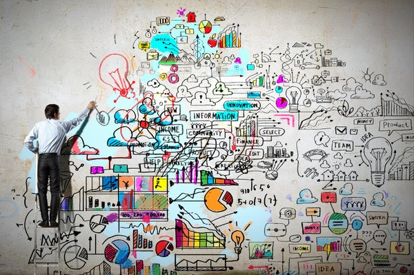

Electronics For You!
Genius is one percent inspiration and ninety-nine percent perspiration.
|
Engineering is the application of mathematics, science, economics, and social and practical knowledge to invent, innovate, design, build, maintain, research, and improve structures, machines, tools, systems, components, materials, processes, solutions, and organizations. Engineer is a person with a proper education in the field of engineering. The word engineer is derived from the Latin root ingenium, meaning "cleverness". Engineers design materials, structures, machines and systems while considering the limitations imposed by practicality, safety and cost. |
 |
According to the PMBOK (Project Management Body of Knowledge) 3rd edition, A project is defined as a temporary endeavor with a beginning and an end and it must be used to create a unique product, service or result
.

|
A project is an activity to meet the creation of a unique product or service and thus activities that are undertaken to accomplish routine activities cannot be considered projects. Electronics is a field of science that deals with electronically controlled circuits and systems development. Explore electronics development with nevonprojects with our largest of electronics projects ideas and topics for your development needs. The worlds largest repository of electronics projects ideas researched from various electronics domains. Your search for innovative electronics projects ends at nevonprojects. Visited by over half a million users every month in search of latest electronics project ideas nevonprojects is a onsstop destination for electronics ideas. |